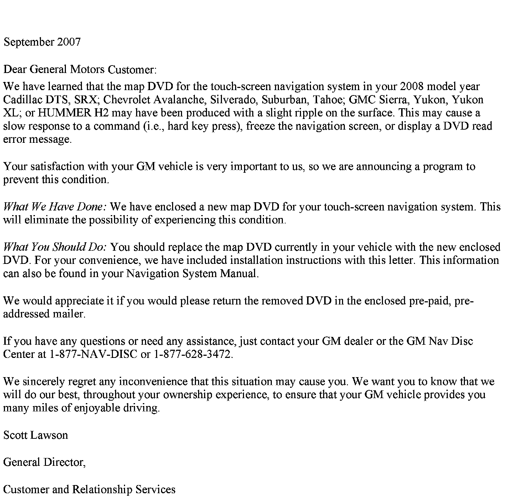

Operation CHARM
: Car repair manuals for everyone.
Home
>>
Cadillac
>>
2008
>>
SRX AWD V8-4.6L
>>
Repair and Diagnosis
>>
Accessories and Optional Equipment
>>
Navigation System
>>
Technical Service Bulletins
>>
Recalls
>>
Campaign - Navigation System DVD Upgrade
>>
Owner Letter
Owner Letter
